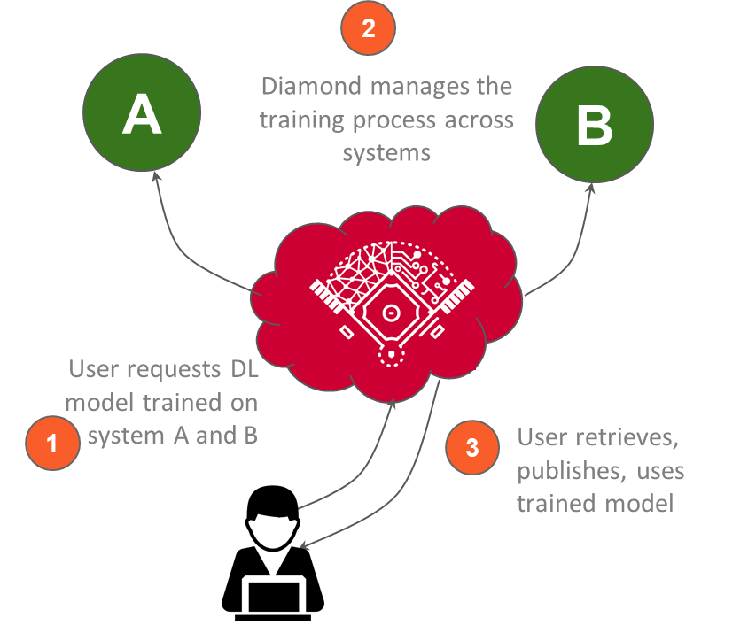
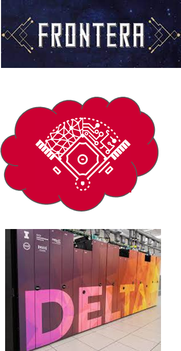

Try Diamond
Use a Jupyter notebook to run Diamond tutorials in your browser. No installation required!

Outsource training of large models to the managed Diamond service.
Diamond manages the long-running large model training job with intelligent partitioning and scheduling with optimized turnaround time and node hour consumption.


Manage execution across distributed resources.
Diamond offers container configuration service so that users can configure the software environment once and run across NSF computing centers and campus RCC. Diamond provides cross machine job and data management.
Provenance Management.
Diamond tracks the code and data versions when training large neural networks and integrates Garden and Hugging Face for model publishing and on-demand inference.